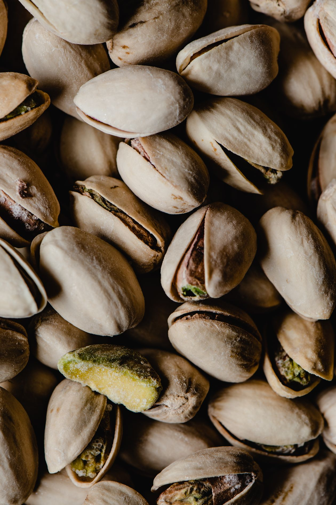

About the chef
The working pagesThe story, briefly
Yasmin Haddad learned baklava the way it is usually learned: standing on a stool in a family bakery, being handed the brush. The family's style came from Gaziantep, the city that treats pistachio baklava as a civic matter, and the rule she was raised on was the one this kitchen still keeps — forty sheets, a weighed filling, and nothing about either of them kept secret.
She baked in two London restaurant kitchens, ran a market stall through three winters, and opened Forty Layers in 2019 as a bake-to-order kitchen rather than a shop: no counter, no display, nothing baked that nobody has asked for. The festival book — Eid above all — became the kitchen's centre of gravity, and with it the two supply lines the whole business now hangs on: a partner orchard in Sicily for pistachios, a partner apiary in Kent for honey.
Neither partner is named on this site. They are small growers who sell to a handful of kitchens, not brands, and the arrangement is described instead of advertised: their figures, printed with their agreement, are on the home page.
Why the books are open
A tray of baklava is mostly two harvests and an afternoon of handwork. When a harvest halves, a kitchen has three honest options — raise the price, shrink the filling and say so, or stop baking — and one dishonest one: shrink quietly. Publishing the harvest figures, the filling weights and both seasons' prices costs this kitchen nothing it wasn't already spending on trust, and it settles arguments before they start. The ledger is the marketing. There isn't any other.

The year as it runs
Season by season| When | What happens | What it decides |
|---|---|---|
| Late Aug – Sep | Pistachio harvest. The nuts are shaken from the trees and hulled and dried within a day at the orchard — left in the hull, they stain and sour. Kernels are graded, shelled and shipped. | Whether this is a heavy or a light year: 18–24 kg a tree, or 7–11 kg. |
| October | The verdict is printed. Per-tree figures published, the season's rate card set, wholesale prices agreed in writing for the season ahead. | Every price on the rate card, until next October. |
| May – Aug | Honey flow. Supers go on the Kent hives as the forage builds; the apiary, not the kitchen, judges the flow week by week. | Whether the flow will read good (20–30 kg a hive) or poor (8–14 kg). |
| Late August | Honey off. Supers come off, honey is settled and jarred for the kitchen in bulk. Every delivery is checked with a refractometer on arrival: over 20% moisture, it doesn't go in the book — honey above that can ferment, and it goes back. | The walnut tray's price band, and whether there are surplus jars to sell. |
| Ramadan → Eid | The festival book. Pre-orders open through Ramadan; bake weeks run at full capacity; the book closes 10 days before Eid and does not reopen for anyone. | The year's biggest bake — planned against the printed crop, never against hope. |
| All year | Bake days, Thu–Sat. Filo layered in the morning, trays out in the afternoon, collection the same day or posted in tins. | The register on the home page. |
Allergens & labelling
Printed on every trayRead this before you order for someone else
Tree nuts — pistachio and walnut — are the point of this kitchen and are present in every tray, alongside gluten (wheat) in the filo and milk (butter) in the brushing. Sesame is handled in the same room for one festival line. Nothing baked here is safe for a nut-allergic eater, and the kitchen will say so rather than sell the tray. Every tray and box carries the full allergen list on its label, in the same size of print as the name.
Honey is not suitable for infants under 12 months. That line is on the surplus jars and on the celebration box, and it is here too, because honey is an ingredient in everything this kitchen sells.
The honesty pages
No health claims are made for anything sold here — deliberately. Honey is a sugar with a flavour, and a very good one; it is not a medicine, and neither are pistachios. This kitchen sells flavour, craft and a good festival table, and those are enough. Any page that tells you honey will fix your health is selling you something else.
The syrup is not pure honey, and never claims to be. Baklava syrup is honey, sugar and water; the exact split for every line is printed in the explorer on the home page (the classic: 120 g honey to 180 g sugar a tray; the walnut: 200 g to 150 g). A syrup of honey alone would swamp the nuts and bankrupt the apiary — the blend is the craft, stated plainly.
Yields are ranges because harvests are weather. Where this site gives a figure for a crop, it gives the range the growers themselves work to. A single exact number would look more confident and be less true.
Terms, plainly
Festival bookings take a 25% deposit; the balance is due on collection. Cancel up to 14 days before your collection date and the deposit comes back in full — the trays were never baked. Inside 14 days the deposit is kept, because by then the filo has been layered for you. The Eid book closes 10 days before Eid and the closing is real: it protects the orders already in it.
Wholesale standing orders start at six trays a week, priced 20% under the season's rate card, the season price agreed in writing a season ahead. Keeping: trays travel in tins at room temperature — 14 days for pistachio, 10 for walnut — and should never be refrigerated. Postage is within the UK, in tins, at cost.